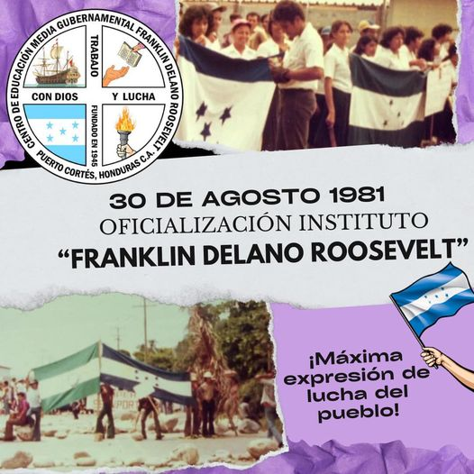

Nuestra Misión
Brindar una educación integral que forme individuos competentes, responsables y críticos, preparados para los desafíos del futuro.
Nuestra Visión
Ser un referente en educación técnica y profesional, reconocida por su innovación y compromiso con la excelencia académica.
Nuestros Valores
- Excelencia
- Innovación
- Respeto
- Responsabilidad Social
- Trabajo en Equipo
Nuestros Historia
- El Instituto Franklin Delano Roosevelt, ubicado en Puerto Cortés, Honduras, tiene una rica historia marcada por su compromiso con la educación de calidad y la formación integral de sus estudiantes. Fundado en la década de 1960, el instituto se ha convertido en un pilar educativo en la región, ofreciendo una variedad de programas académicos que incluyen desde educación básica hasta niveles superiores.
- Fundación: El instituto fue fundado con el objetivo de proporcionar una educación inclusiva y de calidad, inspirada en los ideales de Franklin D. Roosevelt, quien promovía el bienestar social y la educación como herramientas para Puerto Cortes
